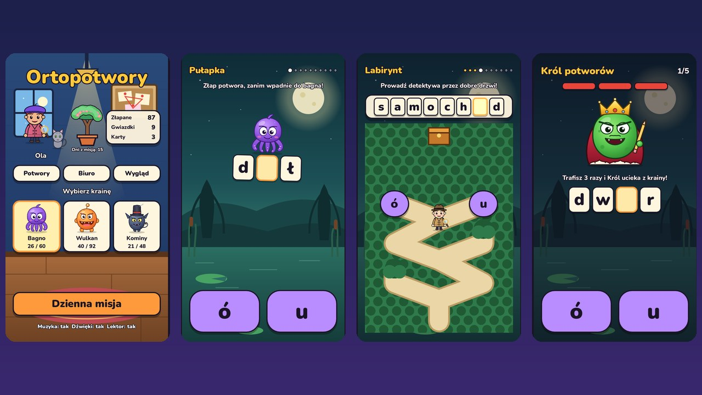
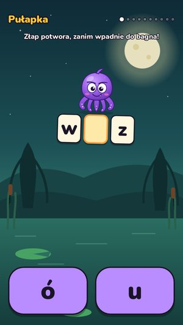
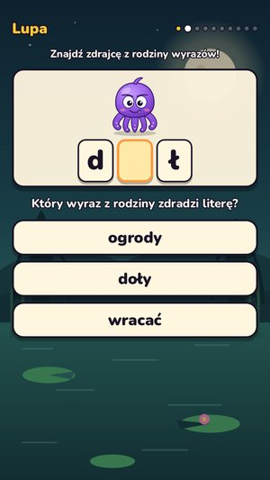

Senne gry Artura › Ortopotwory
Ortopotwory dla nauczycieli i terapeutów pedagogicznych
Pomóż nam sprawdzić, jak gra wspierająca ćwiczenie polskiej ortografii sprawdza się w pracy z dziećmi.
Ortopotwory to gra na Androida dla dzieci w wieku 7–12 lat. Dziecko jako detektyw łapie potwory, które pomieszały litery, i w krótkich misjach ćwiczy pisownię trudnych wyrazów. Gra działa bez internetu, nie ma reklam i nie zbiera danych.
- dla dzieci 7–12 lat
- Android
- bez reklam
- offline

Ekrany z gry




Zakres ćwiczeń
Każda kraina to jedna trudność ortograficzna. Razem 425 wyrazów i 67 zdań do dyktanda czytanych przez lektora.
ó czy u
Bagno Ósemki: wymiana ó na o, e, a oraz zakończenia -ów, -ówka, -ówna. W wersji bezpłatnej.
rz czy ż
Wulkan Żarłoka: rz wymienne na r, ż wymienne na g, dz, h, s, z i wyrazy do zapamiętania.
ch czy h
Kominy Chochlika: h wymienne na g, ż, z, ch na końcu wyrazów i wyrazy do zapamiętania.
ą czy ę
Bąblowe Jezioro: ą i ę oraz om, on, em, en przed spółgłoskami.
Zmiękczenia
Śnieżna Grota: ś czy si, ć czy ci, ź czy zi, ń czy ni, dź czy dzi.
Wyjaśnienia po odpowiedzi. Po każdej odpowiedzi dziecko widzi poprawną pisownię i krótkie wyjaśnienie: regułę albo wyraz z tej samej rodziny, np. „stół, bo stoły”. Po błędnej odpowiedzi obrysowuje wyraz palcem, a lektor go czyta. Gra nigdy nie pokazuje wyrazu z błędem.
Dla kogo?
Samodzielne ćwiczenia w domu
Jedna misja trwa około 8–10 minut. Dziecko może grać samo, a rodzic widzi postępy w strefie rodzica.
Dodatkowe utrwalanie ortografii
Wyrazy wracają w powtórkach po 1, 3, 7, 14 i 30 dniach, a wyraz z błędem już następnego dnia.
Krótkie aktywności edukacyjne
Pojedyncza minigra albo dyktando zajmuje kilka minut, więc łatwo ją wpleść w zajęcia.
Materiał uzupełniający
Jako dodatek do pracy pedagogicznej, gdy dziecko potrzebuje więcej ćwiczeń z konkretną trudnością.
Ważne. Ortopotwory to gra do ćwiczenia ortografii, a nie certyfikowane narzędzie terapeutyczne. Nie diagnozuje i nie leczy dysleksji ani dysortografii, a jej skuteczność nie została zbadana. Właśnie dlatego prosimy specjalistów o opinie.
Bezpieczeństwo i prywatność
Brak reklam
W grze nie ma reklam, losowania nagród ani subskrypcji.
Działa bez internetu
Do grania nie potrzeba połączenia z internetem. Gra nie prosi o dostęp do mikrofonu, kamery, kontaktów ani lokalizacji.
Gra nie zbiera danych
Bez kont i bez wysyłania danych. Postępy i imię detektywa zostają w pamięci telefonu. Ewentualny zakup obsługuje Google Play.
Raport postępów dla rodzica
Strefa rodzica za bramką pokazuje postępy w każdej krainie i najtrudniejsze wyrazy. Raport liczy się na telefonie i nigdzie nie jest wysyłany.
Pomóż nam rozwijać Ortopotwory
Szukamy nauczycieli i terapeutów pedagogicznych, którzy zechcą przetestować grę i podzielić się szczerą opinią. Zainteresowanym specjalistom bezpłatnie udostępniamy pełną wersję. Zależy nam również na uwagach krytycznych.
Orientacyjny czas pierwszego testu to około 10 minut.
- Wypełnij krótkie zgłoszenie poniżej.
- Odpiszemy e-mailem z kodem do pełnej wersji w Google Play.
- Zagraj około 10 minut, najlepiej jedną misję w wybranej krainie.
- Wypełnij krótką ankietę na dole tej strony.
Zgłoszenie do testów
Wystarczy imię i e-mail. Nie pytamy o telefon, nazwisko, szkołę ani o dane dzieci.
Opinia po teście
Po przetestowaniu gry daj nam znać, co myślisz. Trzy krótkie pytania, około 2 minut.